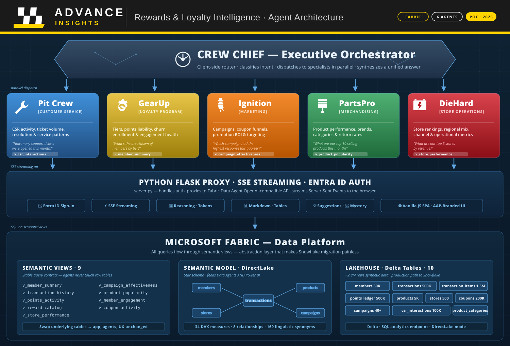

AAP Data Agent POC
Advance Auto Parts — Rewards & Loyalty Intelligence Platform

Solution Overview
A fully functional natural-language analytics interface over Advance Auto Parts rewards and loyalty data, powered by Microsoft Fabric Data Agents. Business users type plain English questions — "What are our top stores by revenue?", "Which tier has the highest coupon redemption rate?" — and get immediate, accurate answers with the underlying data.
The system includes six specialist AI agents, each trained on a specific business domain (loyalty, marketing, merchandising, store operations, customer service), plus an orchestrator that routes cross-functional questions to the right experts. Everything runs on a Fabric workspace with a Lakehouse, semantic model, and five Data Agents, fronted by an AAP-branded web application.
The Business Problem
Marketing and loyalty teams have questions that currently require analyst time, SQL expertise, or waiting for a scheduled report. The data exists — in Snowflake, in operational systems, in exports — but the path from question to answer is slow.
Fabric Data Agents collapse that path. A loyalty program manager can ask "How are Platinum members trending quarter over quarter?" and get an answer in seconds, with the data table and the agent's reasoning visible. No tickets, no waiting, no SQL.
What the Demo Shows
- Six specialist agents — each focused on a business domain, with deep instruction sets that teach them the terminology and data relationships
- Cross-functional routing — the Crew Chief agent automatically dispatches multi-domain questions to the right specialists and synthesizes their answers
- Transparent reasoning — every response shows the agent's chain-of-thought: what it understood, what SQL it generated, how it interpreted the results
- Production-grade data — 50,000 members, 500,000+ transactions, 500 stores with realistic tier distributions, seasonal patterns, and regional variation
- Schema abstraction — all queries go through semantic views, so when the real Snowflake data replaces the synthetic data, nothing in the app changes except the view definitions
Key Capabilities
- Ask your data, don't query it. Business users get answers in plain English. No SQL, no analyst queue, no report request.
- Six experts, one interface. Each agent is specialized — loyalty, marketing, merchandising, stores, customer service — and knows the domain vocabulary. The orchestrator connects them.
- Data stays in Fabric. No data leaves the Microsoft environment. Fabric Data Agents run inside the workspace, querying the Lakehouse directly.
- Swap the data, keep the app. Built against placeholder data. When the real Snowflake connection is made, the semantic views are remapped. The web app, agents, and user experience don't change.
- Built in weeks, not months. The full POC — data model, five agents, branded web app — was built in under a month using Fabric's native capabilities.
- Works alongside Power BI. The semantic model serves both the Data Agents and traditional Power BI reports — conversational analytics and dashboards from the same data.
Production Path
Steps to move from POC to production:
| Step | Who | What |
|---|---|---|
| 1. Snowflake access | IT | Grant Fabric mirroring access to the loyalty/rewards Snowflake databases |
| 2. Schema mapping | Joint | Map real Snowflake tables to the semantic views (7 migration prompts ready) |
| 3. Fabric workspace | Microsoft | Deploy workspace in production tenant, configure mirroring, load data |
| 4. Agent tuning | Microsoft | Update agent instructions for real column names, business rules, edge cases |
| 5. UAT | Marketing | Test with real questions from the marketing team, iterate on agent accuracy |
| 6. Deploy | Joint | Azure Static Web Apps deployment, Entra ID auth, production hardening |
The Six Agents
Each agent is a Fabric Data Agent with a specialized instruction set, trained on a specific business domain. Users select an agent tab and ask questions in natural language.
Client-side router that analyzes your question, identifies which specialist agents are relevant, dispatches to them in parallel, and synthesizes a unified answer. Ask broad, cross-functional questions and Crew Chief coordinates the response.
Analyzes CSR agent activity, member service patterns, support operations, and ticket history. Provides insights into service volume, resolution patterns, and department workload distribution.
Tracks member health, tier distribution, points liability, enrollment trends, and churn risk. The go-to agent for understanding the loyalty program's current state and trajectory.
Covers campaign performance, coupon redemption funnels, promotion ROI, and segment targeting. Helps the marketing team understand what's working and where to invest next.
Analyzes product performance, brand rankings, category trends, and return rates across the auto parts catalog. Delivers category comparisons, SKU-level detail, and revenue concentration insights.
Tracks retail location performance, regional comparisons, channel mix, and operational metrics across the 500-store network. Provides store rankings, regional benchmarks, and return rate analysis.
Why Six Agents?
A single general-purpose agent could answer any question, but it would lack depth. Each of our five Fabric Data Agents has a specialized instruction set that teaches it:
- Domain vocabulary — what "churn" means for loyalty vs. what "churn" means for stores
- Query patterns — the specific SQL patterns that produce accurate results for each domain (tier-based aggregations for loyalty, regional rollups for stores, funnel metrics for marketing)
- Business rules — a Platinum member who hasn't transacted in 180 days is a churn risk, not an inactive account; a coupon with 0% redemption might be newly issued, not failed
- Guardrails — each agent stays in its lane. GearUp won't guess at store operations questions; it'll say "that's outside my domain."
The sixth agent, Crew Chief, ties them together. When a user asks a question that spans domains — "How are top-tier members responding to the holiday promo?" — Crew Chief routes it to both GearUp (loyalty tiers) and Ignition (promotions), gets both answers, and synthesizes a unified response.
Chat Interface Features
🗂️ Agent Tabs
Six color-coded tabs across the top of the chat area, each with a custom SVG icon and hover tooltip showing the agent's description. Click a tab to switch specialists instantly.
💬 Natural Language Input
Type plain English questions in the chat input. No SQL, no query syntax. The agent translates your question into the right query against the data model.
🧠 Agent Reasoning Panel
Expandable sidebar showing the agent's chain-of-thought as connected bubbles. Each step shows what the agent is doing (interpreting question, generating SQL, executing query) with per-step timing in seconds.
📊 Reasoning Groups
Each question you ask creates a collapsible group in the reasoning panel. Previous groups auto-collapse so you can focus on the current question while reviewing history.
🪙 Token Usage Counter
Per-question token breakdown (prompt, completion, total) inside each reasoning group. Session total displayed at the bottom when you've asked multiple questions.
🎲 Mystery Question Dice
Click the fuzzy dice button to get an LLM-generated creative question tailored to the current agent. The dice spin with a 3D animation while waiting for the response, then land on random pip values (1–6) when the question arrives and auto-populates the chat input.
💡 Lightbulb Suggestions
Click the lightbulb icon to slide out a panel of sample questions for the current agent. Pick one to populate the input field. The panel slides away when you make a selection or click the lightbulb again.
📝 Markdown Rendering
Agent responses render as formatted markdown with full table support. Data tables display in clean HTML tables inside chat bubbles.
⚡ Real-Time Streaming
Responses stream in via Server-Sent Events (SSE) with a live character counter. You see the answer building in real time, not waiting for a complete response.
🔀 Crew Chief Routing
Cross-functional questions are automatically classified by topic keywords, dispatched to multiple specialist agents in parallel, and the responses are synthesized into a single answer with per-agent attribution.
📱 Responsive Layout
Desktop: horizontal agent tabs. Tablet: compact tabs with smaller icons. Mobile: hamburger menu with a slide-out sidebar for agent selection.
🔐 Entra ID Auth
Microsoft Entra ID sign-in flow. The Python proxy handles authentication to the Fabric API. Users see their name in the nav bar and can sign out.
Screenshots
📷 Main chat interface — Agent tabs, welcome screen with sample questions, chat input with dice and lightbulb icons
Screenshot will be captured by browser automation agent
📷 Agent response with data table — Markdown-rendered response showing a results table with formatted data
Screenshot will be captured by browser automation agent
📷 Reasoning panel expanded — Chain-of-thought steps, per-step timing, token usage per question
Screenshot will be captured by browser automation agent
📷 Crew Chief multi-agent response — Cross-functional question routed to multiple specialists with synthesized answer
Screenshot will be captured by browser automation agent
📷 Mystery dice and lightbulb suggestions — Dice spinning animation, lightbulb slide-out panel with sample questions
Screenshot will be captured by browser automation agent
📷 Mobile responsive view — Hamburger menu, sidebar agent selection, compact layout
Screenshot will be captured by browser automation agent
Synthetic Data
The POC runs on generated data that mirrors the Advance Auto Parts loyalty program schema. The data is statistically realistic — not random — with distributions tuned to reflect a real auto parts retail business.
| Dataset | Volume | Key Characteristics |
|---|---|---|
| Members | 50,000 | Bronze/Silver/Gold/Platinum tier split (~60/25/10/5), realistic enrollment dates, opt-in rates varying by tier |
| Transactions | 500,000+ | 3+ years of history, seasonal peaks (Nov–Dec), weekday/weekend patterns, in-store dominant channel mix |
| Line Items | 1.5M+ | Product-level detail with category-specific return rates, brand concentration patterns |
| Products | 5,000 SKUs | 11 auto parts categories (batteries, brakes, oil, filters, etc.) with realistic price ranges |
| Stores | 500 | Regional distribution across US, revenue variance by region, store-level performance outliers |
| Points Ledger | ~500K entries | Earn/redeem transactions tied to member activity, tier-correlated redemption rates |
| Campaigns | 40+ | Email, SMS, direct mail campaigns with varying response rates by type |
| Coupons | ~200K | Fixed-dollar and percentage-off types, tiered redemption rates, campaign attribution |
| CSR Interactions | ~100K | Department-specific activity mix, resolution patterns, member lifecycle events |
Architecture Overview
│ Browser │ ───▶ │ Python Proxy │ ───▶ │ Fabric Data Agent │ ───▶ │ Lakehouse │
│ Vanilla JS │ │ server.py │ │ OpenAI-compat API │ │ Delta tables│
│ SPA │ │ Entra ID auth│ │ 5 agents │ │ SQL endpoint│
└─────────────┘ └─────────────┘ └──────────────────┘ └─────────────┘
┌──────────────────┐
│ Semantic Model │
│ DirectLake mode │
│ DAX measures │
└──────────────────┘
Stack Components
| Component | Technology | Details |
|---|---|---|
| Web App | Vanilla JS SPA | Single HTML file, no framework, no build step. AAP branded with Open Sans + Bebas Neue fonts. |
| API Proxy | Python (Flask) | server.py — handles Entra ID auth, proxies requests to Fabric API, streams SSE responses back to browser. |
| Data Agents | Fabric Data Agent | 5 agents with OpenAI-compatible API. Each has persona instructions, examples, and domain-specific query patterns. |
| Semantic Model | Fabric (DirectLake) | 10 tables, 8 relationships, 34 DAX measures. Linguistic schema with 169 synonyms for natural language accuracy. |
| Data Store | Fabric Lakehouse | Delta tables with SQL analytics endpoint. 9 semantic views provide the stable query contract. |
| Notebooks | PySpark | 01-create-sample-data.py (data generation) and 02-data-sanity-check.py (validation pipeline). |
| Auth | Entra ID | Interactive browser credential for dev. MSAL flow planned for production (app registration required). |
Data Model
Delta Tables (10)
| Table | ~Rows | Description |
|---|---|---|
members | 50K | Loyalty program members with tier, enrollment date, contact preferences |
transactions | 500K | Purchase transactions with store, channel, amounts, dates |
transaction_items | 1.5M | Line items with product, quantity, price, return flag |
points_ledger | 500K | Points earned/redeemed per transaction, running balances |
products | 5K | SKU catalog with brand, category, price |
product_categories | 11 | Auto parts categories (batteries, brakes, oil, etc.) |
stores | 500 | Store locations with region, state, city |
campaigns | 40+ | Marketing campaigns with type, date range, channel |
coupons | 200K | Issued coupons with type, status, redemption tracking |
csr_interactions | 100K | Customer service records with department, type, resolution |
Semantic Views (9)
All queries — from Data Agents, Power BI, and the web app — go through semantic views, never raw tables. This is the abstraction layer that makes schema migration painless.
| View | Purpose |
|---|---|
v_member_summary | Member + tier + points balance + transaction stats |
v_transaction_history | Enriched transactions with member, product, store detail |
v_points_activity | Points earned and redeemed with member context |
v_reward_catalog | Available rewards and redemption patterns |
v_store_performance | Store-level aggregates (revenue, transactions, returns) |
v_campaign_effectiveness | Campaign metrics (reach, response, conversion) |
v_product_popularity | Product rankings by category and revenue |
v_member_engagement | Member activity and engagement scoring |
v_coupon_activity | Coupon lifecycle and redemption funnels |
Semantic Model
The Fabric semantic model sits atop the Lakehouse SQL endpoint in DirectLake mode. It provides:
- 34 DAX measures — pre-computed metrics like Total Revenue, Avg Transaction Value, Points Redeemed MTD, Active Members, Retention Rate
- 8 relationships — proper star schema linking facts to dimensions
- Linguistic schema — 50 table synonyms, 66 column synonyms, 53 value synonyms so the Data Agent understands domain terminology ("PLT" = "Platinum", "txn" = "transaction")
Agent Configuration
Each of the five Fabric Data Agents has three configuration files in the agents/ directory:
| File | Purpose |
|---|---|
config.json | Agent metadata — name, description, persona definition |
*-instructions.md | Full system prompt teaching domain vocabulary, query patterns, business rules, guardrails |
examples.json | 6–8 sample Q&A pairs for few-shot grounding (natural language → expected SQL + response pattern) |
Agent Instruction Approach
Each instruction file teaches the agent:
- Which semantic views to query for its domain
- Domain-specific SQL patterns (e.g., tier-based aggregations, time-series comparisons)
- Business rules (what constitutes "churn", how to calculate "retention", what "active" means)
- Edge cases to handle (empty results, ambiguous time ranges, cross-domain questions to deflect)
Executive Routing (Crew Chief)
The Crew Chief agent runs client-side in JavaScript. It classifies incoming questions by matching keywords against agent domains, selects the top matching agents (including ties), dispatches the question to all of them in parallel via Promise.all(), and synthesizes the responses with per-agent attribution.
Deployment Status
✅ Complete
| Component | Status |
|---|---|
Fabric workspace (AAP-RewardsLoyalty-POC) | Provisioned |
Lakehouse (RewardsLoyaltyData) with SQL endpoint | Created, data loaded |
| Sample data notebook — 10 tables, ~2.8M rows | Loaded and verified |
| Data sanity check notebook — 4-block validation | Passing |
| 9 semantic views deployed | Active |
| Semantic model — DirectLake, 34 DAX measures | Deployed, credential bound |
| Linguistic schema — 169 synonyms | Configured |
| 5 Data Agent configurations | Instruction files ready |
| Web app — AAP branded, 6 tabs, full feature set | Functional (local dev) |
| Python proxy server — auth + SSE streaming | Working |
🔧 Remaining
| Task | Effort | Blocked By |
|---|---|---|
| Import agent instructions into Fabric portal | ~30 min (manual portal work) | Nothing |
| Entra ID app registration | ~15 min | Tenant admin access |
| Azure Static Web Apps deployment | ~1 hour | App registration |
| Snowflake mirroring setup | ~2 hours | AAP Snowflake access |
| Schema migration (view remapping) | ~1 day | Real schema from AAP |
| Agent instruction tuning for real data | ~1 day | Real data loaded |
| UAT with AAP marketing team | ~1 week | Deployed with real data |
Data Approach
Placeholder Schema Origin
The data model was built from a single AAP architecture diagram showing their loyalty platform components: CrowdTwist (loyalty engine), GK Coupon Management, Customer First (CRM), and the underlying transactional systems. We reverse-engineered a normalized relational schema that could support the types of questions a marketing team would ask.
Fidelity Assessment
| Area | Confidence | Notes |
|---|---|---|
| Members & tiers | 🟢 High | Standard loyalty structure. Column names will differ but shape is right. |
| Transactions & items | 🟢 High | Universal retail pattern. Our schema closely mirrors any retail transaction DB. |
| Stores | 🟡 Medium | AAP may not have a dedicated stores table; store data might be transaction attributes. |
| Points & rewards | 🟡 Medium | CrowdTwist manages these externally. Data may arrive as denormalized exports. |
| Campaigns & coupons | 🟡 Medium | GK Coupon Management is a dedicated system; our model is simpler. |
| CSR / audit | 🔴 Low | We modeled basics; AAP has a more complex Customer First + agent system. |
Migration Path
When the real Snowflake schema arrives, the migration follows this sequence:
- Map columns — Identify which Snowflake tables/columns correspond to each semantic view
- Rewrite views — Update the 9
v_*view definitions to point at real tables - Update semantic model — Adjust table definitions, relationships, DAX measures for new column names
- Refresh linguistic schema — Update synonyms for renamed tables/columns
- Tune agent instructions — Update domain-specific query patterns where they reference column names
- Run sanity check — Execute the validation notebook against real data
- UAT — Test with real business questions from the marketing team
The web app, API proxy, auth flow, and user experience do not change. Only the data layer and agent instructions need updating.
Identity & Security
Overview
The application handles two distinct authentication concerns: user identity (who is using the app) and Fabric API access (how the backend talks to Microsoft Fabric). User login flows through Entra ID using a standard authorization-code grant to establish identity. Fabric API access uses the OAuth 2.0 client_credentials grant — the service principal authenticates directly to Fabric in the same tenant. All resources (app registration, Fabric workspace, users) live in a single Entra tenant.
User Login Flow
The browser redirects to Entra ID, the user authenticates, and the API validates the auth code and creates a server-side session. The login establishes identity only — no Fabric tokens are involved.
Fabric API Authentication
When a chat request arrives, the API authenticates to Fabric independently using the service principal's credentials via the client_credentials grant. The user's identity is established at login but is not forwarded to Fabric — all Data Agent queries execute under the SP's identity.
(SP client ID + secret,
scope: Fabric API) E->>API: Access token (SP identity) API->>F: Query with SP token F->>API: Response data API->>B: JSON response
Configuration
The following environment variables control authentication:
| Variable | Purpose | Example |
|---|---|---|
ENTRA_CLIENT_ID | App registration client ID | 176f52b8-... |
ENTRA_CLIENT_SECRET | App registration client secret | (secret) |
ENTRA_TENANT_ID | Entra tenant (login + Fabric) | 16b3c013-... |
FABRIC_WORKSPACE_ID | Target Fabric workspace | e7f4acfe-... |
Security Properties
- Short-lived tokens — All access tokens expire in ~1 hour; MSAL handles caching and silent renewal automatically.
- Secure session cookies — HttpOnly, Secure, SameSite=Lax. No token data is accessible to frontend JavaScript.
- No secrets in frontend — All authentication is server-side. The browser never sees client secrets or Fabric tokens.
- HTTPS enforced — Azure Container Apps enforces HTTPS in production via ingress configuration.
- Least-privilege SP — The service principal requires only Contributor role on the specific Fabric workspace (not tenant-wide permissions).